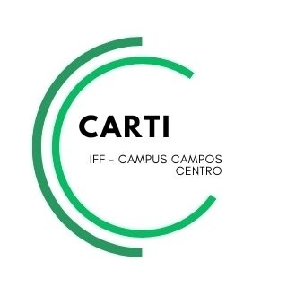

Sobre a Biblioteca Online
O site da Biblioteca Online foi idealizado e desenvolvido por Irlan de Jesus Barbosa, com o apoio de colaboradores, com o objetivo de catalogar os livros disponíveis na biblioteca durante a gestão da presidente Maria Paula dos Santos Oliveira, no ano de 2025.
Este projeto nasceu da necessidade de proporcionar aos alunos um meio acessível e digital para conhecerem os títulos disponíveis em nossa biblioteca física. Com o avanço da tecnologia e a crescente demanda por informações de forma rápida e eficiente, surgiu a ideia de criar um sistema que possibilitasse aos estudantes explorar o acervo sem a necessidade de estarem fisicamente na biblioteca. Dessa forma, a plataforma se torna uma ferramenta essencial para a organização, consulta e planejamento de leituras, permitindo que alunos e professores tenham uma experiência mais fluida e dinâmica na busca pelo conhecimento.
Além de facilitar o acesso ao acervo, a Biblioteca Online também tem um papel importante na preservação e valorização do patrimônio literário da instituição. Através da digitalização do catálogo, os livros são registrados de maneira organizada e segura, evitando perdas de informações e garantindo que futuras gerações possam usufruir do acervo de forma estruturada.
📚 Política de Devolução e Punição por Atraso
Os usuários devem devolver os livros emprestados no prazo máximo de 15 edias (2 semanas). O não cumprimento deste prazo ou a devolução inadequada do material resultará nas seguintes punições:
⏰ Atraso na Devolução
Em caso de atraso, o usuário ficará suspenso de novos empréstimos por um período fixo.
Resulta em 20 dias de suspensão do sistema de empréstimos.
🚨 Livro Danificado
Em caso de devolução do livro em estado danificado, será aplicada uma multa fixa de R$10,00.
O usuário ficará suspenso de novos empréstimos até que a multa seja totalmente quitada.